full.data <- read.csv2("../data/std_and_cropped_data_12_20_2022.csv", sep=",")
full.data <- full.data %>% mutate(
Quality = factor(Quality, levels = c("Good", "Tiny Problems", "Problematic", "Bad", "Yikes"), ordered = TRUE),
Problem = factor(Problem, levels = c("Good", "Damage", "Holes", "Feathering", "Rotation-Staging"), ordered = FALSE),
GoodScan = Quality %in% c("Good", "Tiny Problems") %>% factor(),
LAPD_id = sprintf("FAU%3d-B%s-L%d",FAU, Bullet, Land),
# This is the features ran against the full image
assess_percentile_na_proportion = as.numeric(assess_percentile_na_proportion),
assess_col_na = as.numeric(assess_col_na),
extract_na = as.numeric(extract_na),
assess_middle_na_proportion = as.numeric(assess_middle_na_proportion),
assess_rotation = as.numeric(assess_rotation),
assess_bottomempty = as.numeric(assess_bottomempty),
assess_median_na_proportion = as.numeric(assess_median_na_proportion),
# This is the features ran against the cropped image
assess_percentile_na_proportion_cropped = as.numeric(assess_percentile_na_proportion_cropped),
assess_col_na_cropped = as.numeric(assess_col_na_cropped),
extract_na_cropped = as.numeric(extract_na_cropped),
assess_bottomempty_cropped = as.numeric(assess_bottomempty_cropped),
assess_median_na_proportion_cropped = as.numeric(assess_median_na_proportion_cropped)
)
followupScans <- data.frame()Scan Quality Assessor: Model Comparison
Introduction
This document is intended give well commented exact technical details to show the comparison of various models we tested and compared to determine the best candidate for use in a research or real-world environment.
We will investigate the ability of our features to predict the quality of a scan using a variety of methods. It should be noted that given our current classification system Good > Tiny Problems > Problematic > Bad > Yikes, we will consider that any scan worse than Tiny Problems should be re-scanned by the user. However, this is a tool meant to aid a user in deciding and is not to be taken as a sole source of truth.
Models will be broken into two classification types, ordinal and binary. In the ordinal models, we will try to accurately predict which of the five categories a scan falls into. As quality is a subjective rating, we will focus more on being within one step of the assigned rating than going for perfect agree, although perfect agreement would be optimal. In the binary setting, we will group the scans as Good (1) and Bad (0) as binary classifications are often easier. Good (1) scans will be scans currently labelled as Good or Tiny Problems, with Bad (0) scans being Problematic, Bad, and Yikes.
There will also be a comparison of models between using the features calculated against a full image as taken by the scanner, and a cropped image of the scan. The purpose of this is to increase the speed of the quality assurance stage, and to see if removing the ‘noise’ at the sides of the image helps to increase the estimate of quality, as our focus is on the center of the image.
- XXX Is there a more mathy and rigorous reason we chose these models? They are pretty much just my go-tos, and the only ones I know for categorical. Probably need to add references
The models we will train are logistic regressions, and random forests. These models have often proven to be sufficiently explainable for forensic purposes, as well as statistically sound in many environments.
Results
- XXX Interpret the results
| Model | TPR | TNR | F1 Score | Kappa |
|---|---|---|---|---|
| Stnd Multinomial Logistic Regression | 0.9821 | 0.6786 | 0.9283 | 0.7191 |
| Stnd Binary Logistic Regression | 0.9643 | 0.7714 | 0.9364 | 0.7677 |
| Stnd Ordinal Random Forest | 0.9643 | 0.7714 | 0.9364 | 0.7677 |
| Stnd Binary Random Forest | 0.9286 | 0.8286 | 0.9286 | 0.7571 |
| Crop Multinomial Logistic Regression | 0.9821 | 0.7 | 0.9322 | 0.7375 |
| Crop Binary Logistic Regression | 0.9554 | 0.7929 | 0.9359 | 0.7707 |
| Crop Ordinal Random Forest | 0.9554 | 0.8 | 0.9372 | 0.7764 |
| Crop Binary Random Forest | 0.9375 | 0.8286 | 0.9333 | 0.7709 |
Data handling and type setting
Feature Analysis
In this investigation, we are going to look at the features calculated against the full image. This investigation will tell us more about the predictive power of each feature, and tell us how different the quality categories are from each other.
- XXX Our results are mostly in graphical form. Should I use some kinda test? Is there a way to front load the results as with models?
Assess Percentile NA Proportion
summary(standard.data$assess_percentile_na_proportion) Min. 1st Qu. Median Mean 3rd Qu. Max.
0.00000 0.00331 0.01088 0.02073 0.02716 0.25525 ggplot(standard.data, aes(x=Quality, y=assess_percentile_na_proportion)) +
geom_boxplot() +
ggtitle("Assess Percentile NA Proportion by Quality")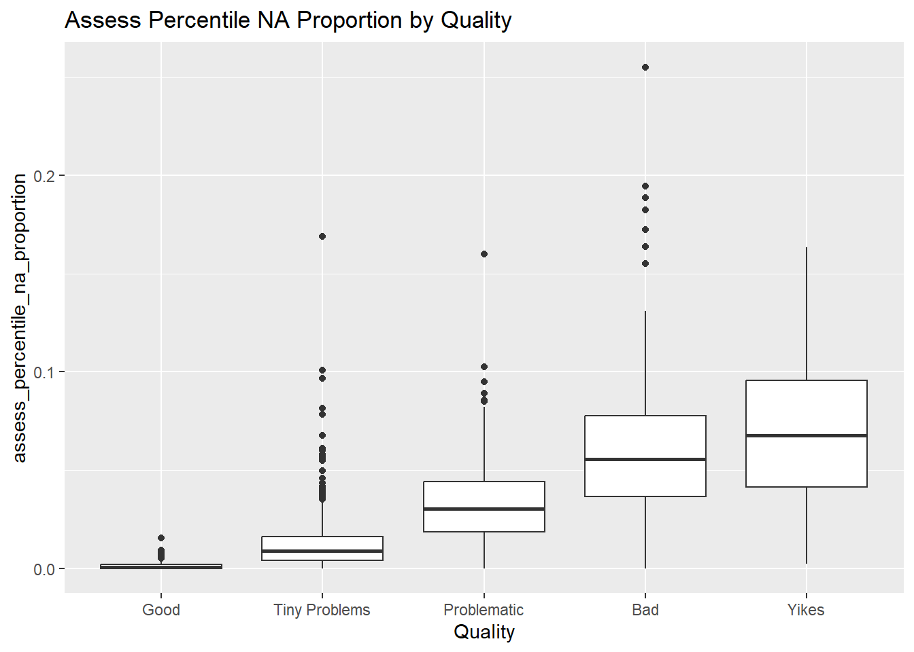
summary(glm(Quality ~ assess_percentile_na_proportion,
data=standard.data, family="binomial"))Warning: glm.fit: fitted probabilities numerically 0 or 1 occurred
Call:
glm(formula = Quality ~ assess_percentile_na_proportion, family = "binomial",
data = standard.data)
Deviance Residuals:
Min 1Q Median 3Q Max
-4.0868 0.0000 0.0104 0.2550 1.4413
Coefficients:
Estimate Std. Error z value Pr(>|z|)
(Intercept) -0.6017 0.1206 -4.991 6.02e-07 ***
assess_percentile_na_proportion 585.1354 45.1784 12.952 < 2e-16 ***
---
Signif. codes: 0 '***' 0.001 '**' 0.01 '*' 0.05 '.' 0.1 ' ' 1
(Dispersion parameter for binomial family taken to be 1)
Null deviance: 1476.42 on 1849 degrees of freedom
Residual deviance: 782.01 on 1848 degrees of freedom
AIC: 786.01
Number of Fisher Scoring iterations: 10In the boxplot we can see that as Assess Percentile NA Proportion increases, the quality of the image decreases. The IQR of the quality categories has overlap, but the medians are consistently different in the chart. The logistic regression also shows that there is overwhelming evidence, with reservation, for this being a useful feature in explaining the quality.
- XXX What does the warning mean here and how do we address it?
Assess Col NA
summary(standard.data$assess_col_na) Min. 1st Qu. Median Mean 3rd Qu. Max.
0.2573 0.9244 1.0755 1.1654 1.2928 4.3684 ggplot(standard.data, aes(x=Quality, y=assess_col_na)) +
geom_boxplot() +
ggtitle("Assess Col NA by Quality")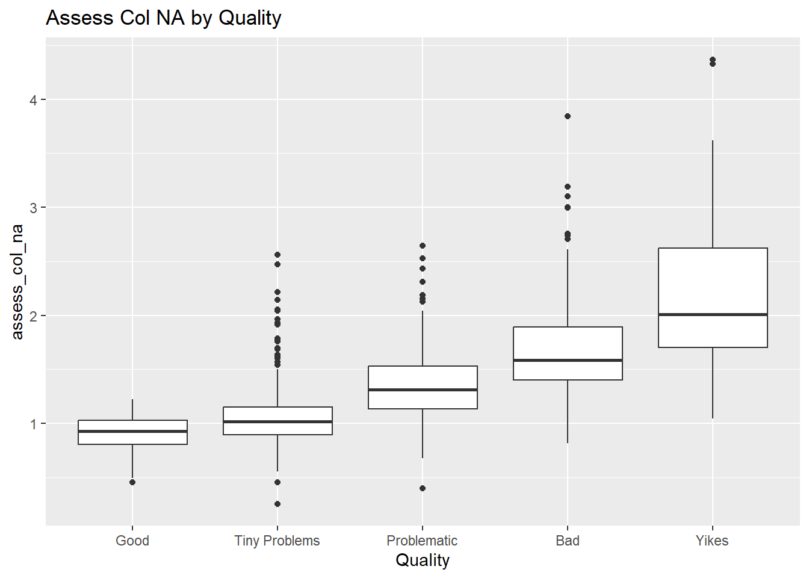
summary(glm(Quality ~ assess_col_na,
data=standard.data, family="binomial"))
Call:
glm(formula = Quality ~ assess_col_na, family = "binomial", data = standard.data)
Deviance Residuals:
Min 1Q Median 3Q Max
-2.3488 0.1629 0.4009 0.5954 1.8298
Coefficients:
Estimate Std. Error z value Pr(>|z|)
(Intercept) -2.5752 0.3593 -7.167 7.66e-13 ***
assess_col_na 4.3089 0.3727 11.563 < 2e-16 ***
---
Signif. codes: 0 '***' 0.001 '**' 0.01 '*' 0.05 '.' 0.1 ' ' 1
(Dispersion parameter for binomial family taken to be 1)
Null deviance: 1476.4 on 1849 degrees of freedom
Residual deviance: 1269.5 on 1848 degrees of freedom
AIC: 1273.5
Number of Fisher Scoring iterations: 6In the boxplot we can see that as Assess Col NA increases, the quality of the image decreases. The IQR of the quality categories has overlap, but the medians are consistently different in the chart, with the exception of “Good” and “Tiny Problems” which are very similar. The logistic regression also shows that there is overwhelming evidence for this being a useful feature in explaining the quality.
Extract NA
summary(standard.data$extract_na) Min. 1st Qu. Median Mean 3rd Qu. Max.
3.667 12.797 15.082 15.915 18.303 48.454 ggplot(standard.data, aes(x=Quality, y=extract_na)) +
geom_boxplot() +
ggtitle("Extract NA by Quality")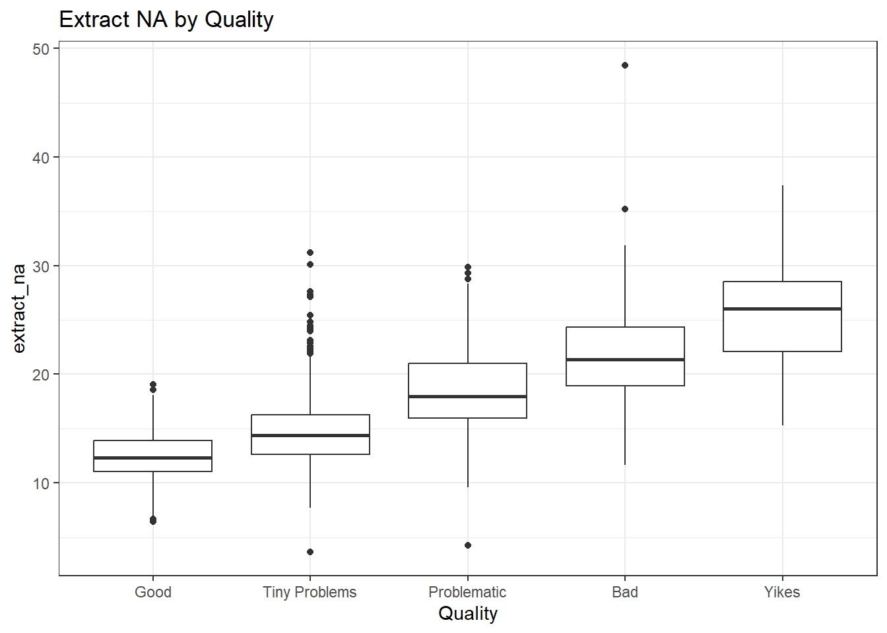
summary(glm(Quality ~ extract_na,
data=standard.data, family="binomial"))
Call:
glm(formula = Quality ~ extract_na, family = "binomial", data = standard.data)
Deviance Residuals:
Min 1Q Median 3Q Max
-2.6889 0.1483 0.3688 0.5775 1.9821
Coefficients:
Estimate Std. Error z value Pr(>|z|)
(Intercept) -3.09877 0.36353 -8.524 <2e-16 ***
extract_na 0.35060 0.02753 12.736 <2e-16 ***
---
Signif. codes: 0 '***' 0.001 '**' 0.01 '*' 0.05 '.' 0.1 ' ' 1
(Dispersion parameter for binomial family taken to be 1)
Null deviance: 1476.4 on 1849 degrees of freedom
Residual deviance: 1226.7 on 1848 degrees of freedom
AIC: 1230.7
Number of Fisher Scoring iterations: 6In the boxplot we can see that as Extract NA increases, the quality of the image decreases. The IQR of the quality categories has overlap, but the medians are consistently different in the chart. The logistic regression also shows that there is overwhelming evidence for this being a useful feature in explaining the quality.
Assess Middle NA Proportion
summary(standard.data$assess_middle_na_proportion) Min. 1st Qu. Median Mean 3rd Qu. Max.
0.0002776 0.0221251 0.0392280 0.0517308 0.0688228 0.3851669 ggplot(standard.data, aes(x=Quality, y=assess_middle_na_proportion)) +
geom_boxplot() +
ggtitle("Assess Middle NA Proportion by Quality")
summary(glm(Quality ~ assess_middle_na_proportion,
data=standard.data, family="binomial"))
Call:
glm(formula = Quality ~ assess_middle_na_proportion, family = "binomial",
data = standard.data)
Deviance Residuals:
Min 1Q Median 3Q Max
-2.72629 0.03616 0.24091 0.58568 1.34175
Coefficients:
Estimate Std. Error z value Pr(>|z|)
(Intercept) -0.4164 0.1454 -2.864 0.00419 **
assess_middle_na_proportion 73.9873 5.7409 12.888 < 2e-16 ***
---
Signif. codes: 0 '***' 0.001 '**' 0.01 '*' 0.05 '.' 0.1 ' ' 1
(Dispersion parameter for binomial family taken to be 1)
Null deviance: 1476.4 on 1849 degrees of freedom
Residual deviance: 1115.6 on 1848 degrees of freedom
AIC: 1119.6
Number of Fisher Scoring iterations: 7In the boxplot we can see that as Extract NA increases, the quality of the image decreases. The IQR of the quality categories has overlap, but the medians are consistently different in the chart. The logistic regression also shows that there is overwhelming evidence for this being a useful feature in explaining the quality.
Assess Rotation
summary(standard.data$assess_rotation) Min. 1st Qu. Median Mean 3rd Qu. Max.
0.0000 0.3143 0.6904 1.0279 1.4601 4.9878 ggplot(standard.data, aes(x=Quality, y=assess_rotation)) +
geom_boxplot() +
ggtitle("Assess Rotation by Quality")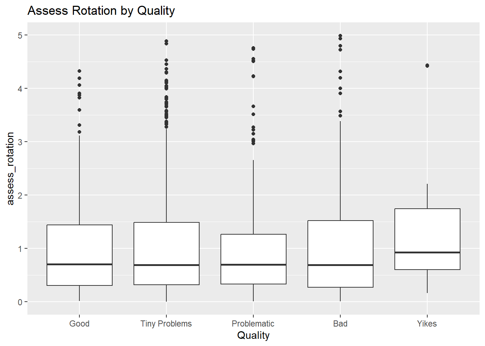
summary(glm(Quality ~ assess_rotation,
data=standard.data, family="binomial"))
Call:
glm(formula = Quality ~ assess_rotation, family = "binomial",
data = standard.data)
Deviance Residuals:
Min 1Q Median 3Q Max
-2.0678 0.5270 0.5443 0.5507 0.5555
Coefficients:
Estimate Std. Error z value Pr(>|z|)
(Intercept) 1.79066 0.09775 18.319 <2e-16 ***
assess_rotation 0.05131 0.07105 0.722 0.47
---
Signif. codes: 0 '***' 0.001 '**' 0.01 '*' 0.05 '.' 0.1 ' ' 1
(Dispersion parameter for binomial family taken to be 1)
Null deviance: 1476.4 on 1849 degrees of freedom
Residual deviance: 1475.9 on 1848 degrees of freedom
AIC: 1479.9
Number of Fisher Scoring iterations: 4In the boxplot, we see that there is no significant visual difference in median or IQR of Assess Rotation when grouped by Quality. The logistic regression shows no evidence that this feature can help explain the quality of an image. This feature was primarily intended for use in predicting a particular problem that occurs in scans.
Assess Bottomempty
summary(standard.data$assess_bottomempty) Min. 1st Qu. Median Mean 3rd Qu. Max.
8.516 22.669 27.540 29.903 34.634 95.394 ggplot(standard.data, aes(x=Quality, y=assess_bottomempty)) +
geom_boxplot() +
ggtitle("Assess Bottomempty by Quality")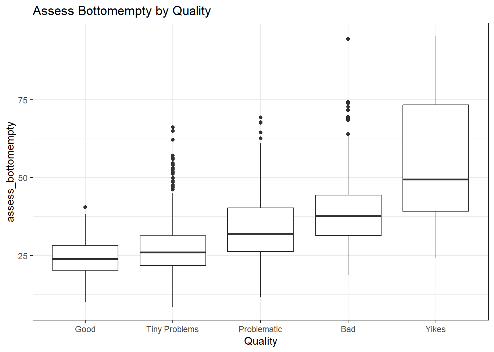
summary(glm(Quality ~ assess_bottomempty,
data=standard.data, family="binomial"))
Call:
glm(formula = Quality ~ assess_bottomempty, family = "binomial",
data = standard.data)
Deviance Residuals:
Min 1Q Median 3Q Max
-2.4871 0.2807 0.4750 0.6070 1.0997
Coefficients:
Estimate Std. Error z value Pr(>|z|)
(Intercept) -0.577479 0.258462 -2.234 0.0255 *
assess_bottomempty 0.089585 0.009999 8.960 <2e-16 ***
---
Signif. codes: 0 '***' 0.001 '**' 0.01 '*' 0.05 '.' 0.1 ' ' 1
(Dispersion parameter for binomial family taken to be 1)
Null deviance: 1476.4 on 1849 degrees of freedom
Residual deviance: 1368.4 on 1848 degrees of freedom
AIC: 1372.4
Number of Fisher Scoring iterations: 5In the boxplot we can see that as Assess Bottomempty increases, the quality of the image decreases. The IQR of the quality categories has overlap, but the medians are consistently different in the chart. There is an observation of note that the Yikes category has a particularly large IQR. The logistic regression also shows that there is overwhelming evidence for this being a useful feature in explaining the quality.
Assess Median NA Proportion
summary(standard.data$assess_median_na_proportion) Min. 1st Qu. Median Mean 3rd Qu. Max.
0.00000 0.00331 0.01088 0.02073 0.02716 0.25525 ggplot(standard.data, aes(x=Quality, y=assess_median_na_proportion)) +
geom_boxplot() +
ggtitle("Assess Median NA Proportion by Quality")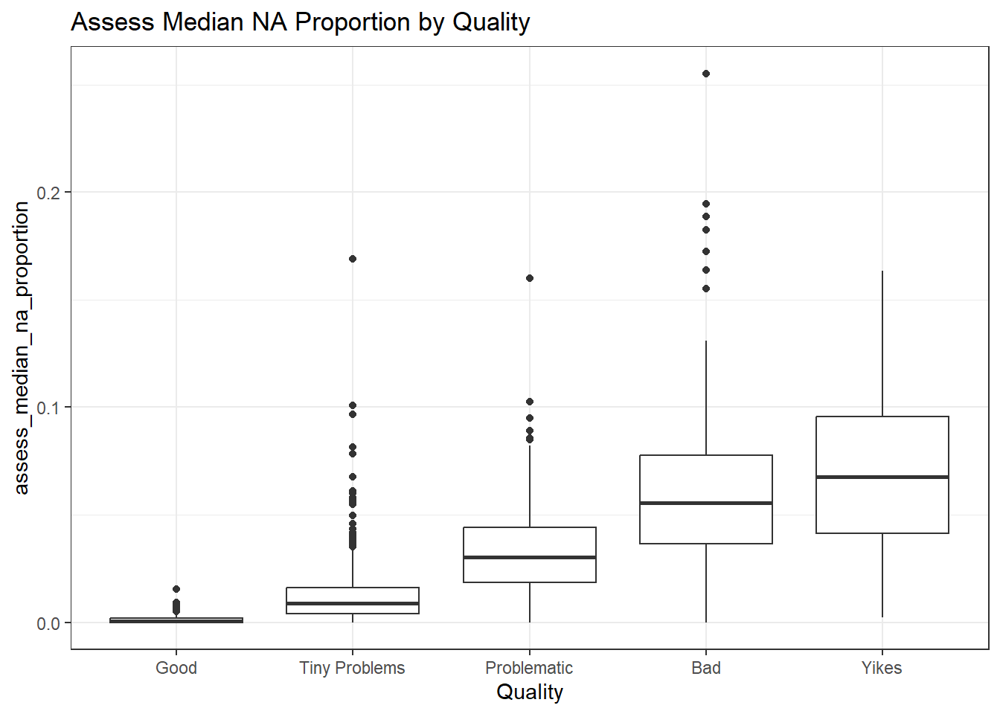
summary(glm(Quality ~ assess_median_na_proportion,
data=standard.data, family="binomial"))Warning: glm.fit: fitted probabilities numerically 0 or 1 occurred
Call:
glm(formula = Quality ~ assess_median_na_proportion, family = "binomial",
data = standard.data)
Deviance Residuals:
Min 1Q Median 3Q Max
-4.0868 0.0000 0.0104 0.2550 1.4413
Coefficients:
Estimate Std. Error z value Pr(>|z|)
(Intercept) -0.6017 0.1206 -4.991 6.02e-07 ***
assess_median_na_proportion 585.1354 45.1784 12.952 < 2e-16 ***
---
Signif. codes: 0 '***' 0.001 '**' 0.01 '*' 0.05 '.' 0.1 ' ' 1
(Dispersion parameter for binomial family taken to be 1)
Null deviance: 1476.42 on 1849 degrees of freedom
Residual deviance: 782.01 on 1848 degrees of freedom
AIC: 786.01
Number of Fisher Scoring iterations: 10In the boxplot we can see that as Assess Median NA Proportion increases, the quality of the image decreases. The IQR of the quality categories has overlap, but the medians are consistently different in the chart. The “Bad” and “Yikes” categories have very similar IQR and Medians. The logistic regression also shows that there is overwhelming evidence, with reservation, for this being a useful feature in explaining the quality.
Cross Correlations
- XXX include https://heike.github.io/ggpcp/ and a scatterplot of the data
correlations <- cor(standard.data[,6:12])
corrplot(correlations, method = "shade")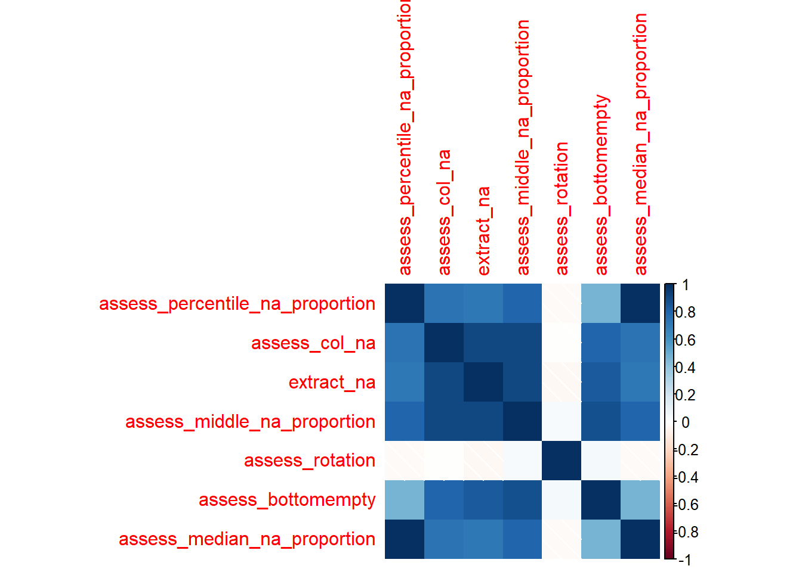
There is significant correlation between most of the variables except assess rotation.
Standard Model Analysis
| Model | TPR | TNR | F1 Score | Kappa |
|---|---|---|---|---|
| Stnd Multinomial Logistic Regression | 0.9821 | 0.6786 | 0.9283 | 0.7191 |
| Stnd Binary Logistic Regression | 0.9643 | 0.7714 | 0.9364 | 0.7677 |
| Stnd Ordinal Random Forest | 0.9643 | 0.7714 | 0.9364 | 0.7677 |
| Stnd Binary Random Forest | 0.9286 | 0.8286 | 0.9286 | 0.7571 |
Metric Function that provides our results:
# Function intended to standardize outputs a bit better
numerical.Metrics <- function(test, modelName) {
metrics <- confusionMatrix(factor(round(test$num.predictions), levels = c(0, 1)),
test$num.Quality, mode="everything", positive = "1")
print(metrics)
#returns c(modelName, TPR, TNR, F1, Kappa)
return(c(modelName, round(metrics$byClass[1], 4), round(metrics$byClass[2], 4),
round(metrics$byClass[7], 4), round(metrics$overall[2], 4)))
}Creation of the training and test data.
sample <- sample(c(TRUE, FALSE), nrow(standard.data), replace=TRUE, prob=c(0.75,0.25))
train <- standard.data[sample, ]
test <- standard.data[!sample, ]
train$followup <- FALSE
train$num.Quality <- 0
train$num.Quality[train$Quality == "Good"] <- 1
train$num.Quality[train$Quality == "Tiny Problems"] <- 1
train$num.Quality <- factor(train$num.Quality, levels = c(0, 1))
test$followup <- FALSE
test$num.Quality <- 0
test$num.Quality[test$Quality == "Good"] <- 1
test$num.Quality[test$Quality == "Tiny Problems"] <- 1
test$num.Quality <- factor(test$num.Quality, levels = c(0, 1))
knitr::kable(table(standard.data$Quality, standard.data$Problem),
caption = "Full Data Problem by Quality")| Good | Damage | Holes | Feathering | Rotation-Staging | |
|---|---|---|---|---|---|
| Good | 253 | 0 | 0 | 0 | 0 |
| Tiny Problems | 0 | 1 | 991 | 61 | 6 |
| Problematic | 0 | 3 | 10 | 235 | 15 |
| Bad | 0 | 64 | 0 | 179 | 10 |
| Yikes | 0 | 1 | 1 | 18 | 2 |
knitr::kable(table(train$Quality, train$Problem), caption = "Train Problem by Quality")| Good | Damage | Holes | Feathering | Rotation-Staging | |
|---|---|---|---|---|---|
| Good | 194 | 0 | 0 | 0 | 0 |
| Tiny Problems | 0 | 1 | 762 | 45 | 6 |
| Problematic | 0 | 3 | 9 | 175 | 11 |
| Bad | 0 | 47 | 0 | 140 | 6 |
| Yikes | 0 | 1 | 1 | 13 | 2 |
knitr::kable(table(test$Quality, test$Problem), caption = "Test Problem by Quality")| Good | Damage | Holes | Feathering | Rotation-Staging | |
|---|---|---|---|---|---|
| Good | 59 | 0 | 0 | 0 | 0 |
| Tiny Problems | 0 | 0 | 229 | 16 | 0 |
| Problematic | 0 | 0 | 1 | 60 | 4 |
| Bad | 0 | 17 | 0 | 39 | 4 |
| Yikes | 0 | 0 | 0 | 5 | 0 |
knitr::kable(table(train$num.Quality), caption = "Train Numeric Quality Totals")| Var1 | Freq |
|---|---|
| 0 | 408 |
| 1 | 1008 |
knitr::kable(table(train$num.Quality, train$Problem), caption = "Train Numeric Problem by Quality")| Good | Damage | Holes | Feathering | Rotation-Staging | |
|---|---|---|---|---|---|
| 0 | 0 | 51 | 10 | 328 | 19 |
| 1 | 194 | 1 | 762 | 45 | 6 |
knitr::kable(table(test$num.Quality), caption = "Test Numeric Quality Totals")| Var1 | Freq |
|---|---|
| 0 | 130 |
| 1 | 304 |
knitr::kable(table(test$num.Quality, test$Problem), caption = "Test Numeric Problem by Quality")| Good | Damage | Holes | Feathering | Rotation-Staging | |
|---|---|---|---|---|---|
| 0 | 0 | 17 | 1 | 104 | 8 |
| 1 | 59 | 0 | 229 | 16 | 0 |
model.metrics.all = data.frame(matrix(ncol=5))
colnames(model.metrics.all) <- c("Model", "TPR", "TNR", "F1", "Kappa")Standard Multi-Nomial Logistic Regression
XXX MultiNomial Model! XXX Why does it label everything as bad only when we render?
The assumptions of the multinomial logisitic regression are: - Nominal dependent variable: Not met - No multi-colinearity: - Linear relationship: - No outlier or high influence points:
train.mutli = train
train.mutli$Quality <- factor(train.mutli$Quality, levels=c("Good", "Tiny Problems", "Problematic", "Bad", "Yikes"), ordered = FALSE)
train.mutli$Quality <- relevel(train.mutli$Quality, ref = "Good")
multi.model <- multinom(Quality ~ assess_percentile_na_proportion + assess_col_na +
extract_na + assess_middle_na_proportion + assess_bottomempty +
assess_median_na_proportion, data = train.mutli)# weights: 40 (28 variable)
initial value 2278.964084
iter 10 value 1532.981843
iter 20 value 1190.075208
iter 30 value 1053.041033
iter 40 value 1001.119671
iter 50 value 986.667634
iter 60 value 981.691049
iter 70 value 981.240972
iter 80 value 977.926799
iter 90 value 974.691850
iter 100 value 972.954719
final value 972.954719
stopped after 100 iterationssummary(multi.model)Call:
multinom(formula = Quality ~ assess_percentile_na_proportion +
assess_col_na + extract_na + assess_middle_na_proportion +
assess_bottomempty + assess_median_na_proportion, data = train.mutli)
Coefficients:
(Intercept) assess_percentile_na_proportion assess_col_na
Tiny Problems 2.704384 138.3027 3.676547
Problematic -1.261561 153.3632 5.686053
Bad -4.195199 170.9479 6.420542
Yikes -9.680671 175.2182 8.531092
extract_na assess_middle_na_proportion assess_bottomempty
Tiny Problems 0.03862907 164.2340 -0.4176745
Problematic 0.04796595 203.4786 -0.5016824
Bad 0.05373007 205.1329 -0.5016471
Yikes -0.08868975 193.7194 -0.4316937
assess_median_na_proportion
Tiny Problems 138.3027
Problematic 153.3632
Bad 170.9479
Yikes 175.2182
Std. Errors:
(Intercept) assess_percentile_na_proportion assess_col_na
Tiny Problems 0.6584012 3.866777 0.9611797
Problematic 0.8709932 2.965673 1.1901016
Bad 1.0506742 2.989553 1.2886095
Yikes 1.6364762 3.571736 1.5960902
extract_na assess_middle_na_proportion assess_bottomempty
Tiny Problems 0.06931489 7.308776 0.03060879
Problematic 0.08891340 6.189048 0.03260586
Bad 0.10017929 7.711831 0.03599654
Yikes 0.17188314 2.161171 0.04930430
assess_median_na_proportion
Tiny Problems 3.866777
Problematic 2.965673
Bad 2.989553
Yikes 3.571736
Residual Deviance: 1945.909
AIC: 1993.909 test$Predictions <- predict(multi.model, test)To help compare these models, we will introduce a compression concept. Just as before, all scans will be divided into Good, which includes Good and Tiny Problems. Bad will include all other categories.
test$num.predictions = 0
test$num.predictions[test$Predictions == "Good"] = 1
test$num.predictions[test$Predictions == "Tiny Problems"] = 1
model.metrics.all <- rbind(model.metrics.all, numerical.Metrics(test, "Stnd Multi Log Reg"))Confusion Matrix and Statistics
Reference
Prediction 0 1
0 84 7
1 46 297
Accuracy : 0.8779
95% CI : (0.8433, 0.9072)
No Information Rate : 0.7005
P-Value [Acc > NIR] : < 2.2e-16
Kappa : 0.6817
Mcnemar's Test P-Value : 1.792e-07
Sensitivity : 0.9770
Specificity : 0.6462
Pos Pred Value : 0.8659
Neg Pred Value : 0.9231
Precision : 0.8659
Recall : 0.9770
F1 : 0.9181
Prevalence : 0.7005
Detection Rate : 0.6843
Detection Prevalence : 0.7903
Balanced Accuracy : 0.8116
'Positive' Class : 1
Standard Binary regression
- (Good/Tiny = 1, Problematic/Bad/Yikes = 0)
num.logit.model <- glm(num.Quality ~ assess_percentile_na_proportion + assess_col_na +
extract_na + assess_middle_na_proportion + assess_bottomempty +
assess_median_na_proportion,
data=train, family="binomial")
summary(num.logit.model)
Call:
glm(formula = num.Quality ~ assess_percentile_na_proportion +
assess_col_na + extract_na + assess_middle_na_proportion +
assess_bottomempty + assess_median_na_proportion, family = "binomial",
data = train)
Deviance Residuals:
Min 1Q Median 3Q Max
-2.8272 -0.0928 0.2885 0.4516 3.8148
Coefficients: (1 not defined because of singularities)
Estimate Std. Error z value Pr(>|z|)
(Intercept) 4.33863 0.66852 6.490 8.59e-11 ***
assess_percentile_na_proportion -45.68310 10.47690 -4.360 1.30e-05 ***
assess_col_na -2.00321 0.68468 -2.926 0.003436 **
extract_na -0.02821 0.05589 -0.505 0.613798
assess_middle_na_proportion -41.59729 11.41217 -3.645 0.000267 ***
assess_bottomempty 0.08773 0.02911 3.013 0.002585 **
assess_median_na_proportion NA NA NA NA
---
Signif. codes: 0 '***' 0.001 '**' 0.01 '*' 0.05 '.' 0.1 ' ' 1
(Dispersion parameter for binomial family taken to be 1)
Null deviance: 1700.54 on 1415 degrees of freedom
Residual deviance: 866.04 on 1410 degrees of freedom
AIC: 878.04
Number of Fisher Scoring iterations: 6test$num.predictions <- predict(num.logit.model, test, type="response")Warning in predict.lm(object, newdata, se.fit, scale = 1, type = if (type == :
prediction from a rank-deficient fit may be misleading# XXX Figure out followup scans
test[test$num.predictions < 0.5 & test$num.Quality == 1, ]$followup = TRUE
test[test$num.predictions > 0.75 & test$num.Quality == 0, ]$followup = TRUE
ggplot(test, aes(x=num.Quality, y=num.predictions)) +
geom_boxplot() +
xlab("True Quality") +
ylab("Probability of good scan") +
ggtitle("Numerical Logistic Prediction Test Data")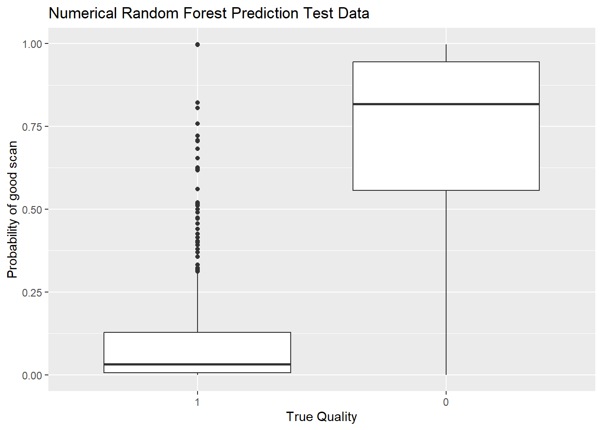
ggplot(test, aes(x=num.Quality, y=num.predictions, color=followup)) +
geom_jitter() +
scale_colour_manual(values=c("grey50", "darkorange"))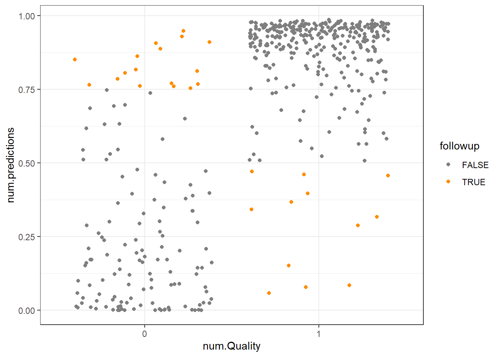
The boxplot shows a general picture of the results of the model. There is a significant number of misclassified scans. Using a typical 0.5 rounding we get the confusion matrix:
model.metrics.all <- rbind(model.metrics.all, numerical.Metrics(test, "Stnd Binary Log Reg"))Confusion Matrix and Statistics
Reference
Prediction 0 1
0 97 11
1 33 293
Accuracy : 0.8986
95% CI : (0.8663, 0.9254)
No Information Rate : 0.7005
P-Value [Acc > NIR] : < 2.2e-16
Kappa : 0.7461
Mcnemar's Test P-Value : 0.001546
Sensitivity : 0.9638
Specificity : 0.7462
Pos Pred Value : 0.8988
Neg Pred Value : 0.8981
Precision : 0.8988
Recall : 0.9638
F1 : 0.9302
Prevalence : 0.7005
Detection Rate : 0.6751
Detection Prevalence : 0.7512
Balanced Accuracy : 0.8550
'Positive' Class : 1
Standard Ordinal random forest
XXX is this an ordinal random forest or just a categorical one?
ord.forest.model <- randomForest(Quality ~ assess_percentile_na_proportion + assess_col_na +
extract_na + assess_middle_na_proportion + assess_bottomempty +
assess_median_na_proportion, data = train,
importance = TRUE)
test$Prediction <- predict(ord.forest.model, test)To help compare these models, we once again use the previous compression metrics.
model.metrics.all <- rbind(model.metrics.all, numerical.Metrics(test, "Stnd Ord Rand For"))Confusion Matrix and Statistics
Reference
Prediction 0 1
0 97 11
1 33 293
Accuracy : 0.8986
95% CI : (0.8663, 0.9254)
No Information Rate : 0.7005
P-Value [Acc > NIR] : < 2.2e-16
Kappa : 0.7461
Mcnemar's Test P-Value : 0.001546
Sensitivity : 0.9638
Specificity : 0.7462
Pos Pred Value : 0.8988
Neg Pred Value : 0.8981
Precision : 0.8988
Recall : 0.9638
F1 : 0.9302
Prevalence : 0.7005
Detection Rate : 0.6751
Detection Prevalence : 0.7512
Balanced Accuracy : 0.8550
'Positive' Class : 1
Standard Numerical Random Forest
- (Good/Tiny = 1, Problematic/Bad/Yikes = 0)
- (Good = 1, Yikes = 0, drop others)
num.RF.model <- randomForest(num.Quality ~ assess_percentile_na_proportion + assess_col_na +
extract_na + assess_middle_na_proportion + assess_bottomempty +
assess_median_na_proportion, data = train,
importance = TRUE)
test$num.predictions <- predict(num.RF.model, test, type="prob")[,2]
test[test$num.predictions < 0.5 & test$num.Quality == 1, ]$followup = TRUE
test[test$num.predictions > 0.75 & test$num.Quality == 0, ]$followup = TRUE
ggplot(test, aes(x=num.Quality, y=num.predictions)) +
geom_boxplot() +
xlab("True Quality") +
ylab("Probability of good scan") +
ggtitle("Numerical Logistic Prediction Test Data")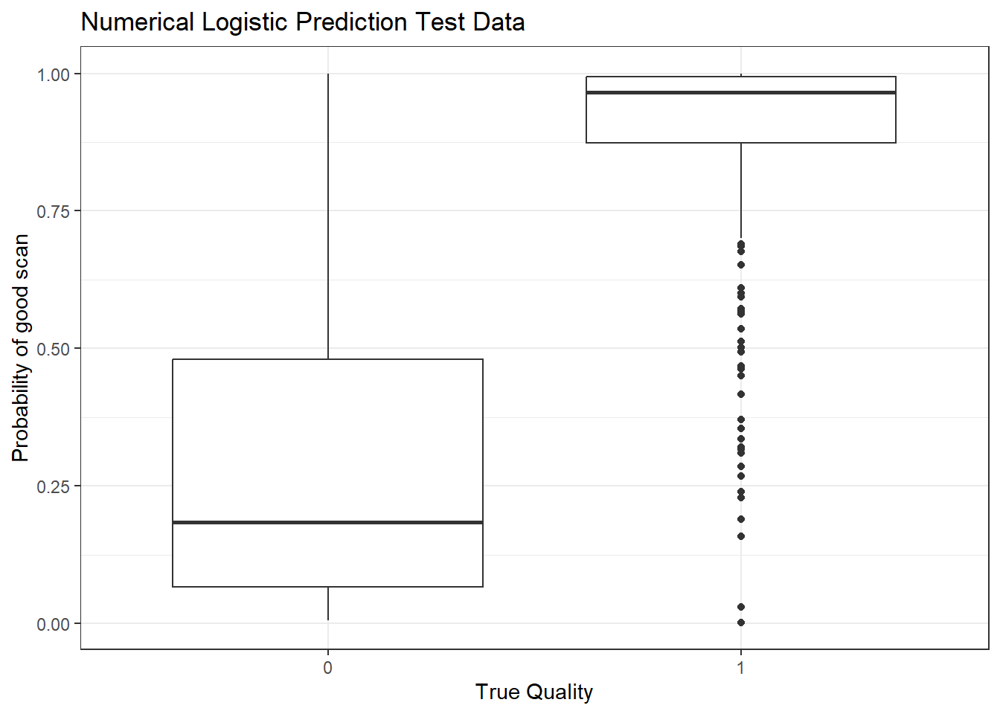
ggplot(test, aes(x=num.Quality, y=num.predictions, color=followup)) +
geom_jitter() +
scale_colour_manual(values=c("grey50", "darkorange"))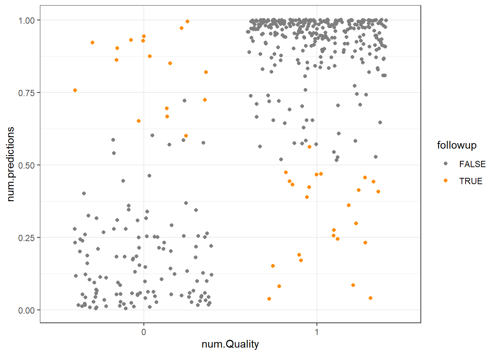
The boxplot shows a general picture of the results of the model. There is a significant number of misclassified scans. Using a typical 0.5 rounding we get the confusion matrix:
model.metrics.all <- rbind(model.metrics.all, numerical.Metrics(test, "Stnd Binary Rand For"))Confusion Matrix and Statistics
Reference
Prediction 0 1
0 100 21
1 30 283
Accuracy : 0.8825
95% CI : (0.8484, 0.9112)
No Information Rate : 0.7005
P-Value [Acc > NIR] : <2e-16
Kappa : 0.7143
Mcnemar's Test P-Value : 0.2626
Sensitivity : 0.9309
Specificity : 0.7692
Pos Pred Value : 0.9042
Neg Pred Value : 0.8264
Precision : 0.9042
Recall : 0.9309
F1 : 0.9173
Prevalence : 0.7005
Detection Rate : 0.6521
Detection Prevalence : 0.7212
Balanced Accuracy : 0.8501
'Positive' Class : 1
Standard Model Results
Cropped Feature Analysis
Hypothesis
The quality of our images predicted by the models and assessed by our algorithms is dependent on the how much of the data from the scan is legible and useful. The bottom middle of the bullet gives us the most information, due to the striations in this area being most prominent. Some scans get distorted due to numerous external factors ranging from a bad scan to the bullet undergoing damages that’s affected those striations. Cropping our scans to cut off parts of the scan that are non-essential could help to eliminate the ‘noise’ around the images that skew the accuracy of the results. The goal is to see whether making a crop will improve the accuracy of our models.
Process
To conduct our analysis, we did a series of tests to compare the cropped version of a scan against the full version. We constructed scatter and box plots as well as ROC curves for visual analysis. We trained a Generalized Linear Model (glm) to test the p values, or importance, of each variable in explaining the quality, and constructed kernel density graphs to compare the scans. Every cropped scan and its full scan counterpart were found to have more than 90% correlation with each other, requiring us to use only one of them for each feature to avoid co-linearity issues.
| Correlation | pvalue_Full | pvalue_cropped | auc_Full | auc_Cropped | |
|---|---|---|---|---|---|
| Extract NA | 0.908 | 0.229 | <2e-16 | 0.871 | 0.902 |
| Assess Bottomempty | 0.905 | 5.86e-10 | <2e-16 | 0.783 | 0.859 |
| Assess Col NA | 0.919 | 1.62e-06 | 1.17e-14 | 0.888 | 0.896 |
| Assess Median NA Proportion | 0.908 | <2e-16 | 6.77e-10 | 0.907 | 0.863 |
Extract NA Cropped
Which of the features is better for discriminating between good and bad scans?
Warning: Returning more (or less) than 1 row per `summarise()` group was deprecated in
dplyr 1.1.0.
ℹ Please use `reframe()` instead.
ℹ When switching from `summarise()` to `reframe()`, remember that `reframe()`
always returns an ungrouped data frame and adjust accordingly.
ℹ The deprecated feature was likely used in the yardstick package.
Please report the issue at <https://github.com/tidymodels/yardstick/issues>.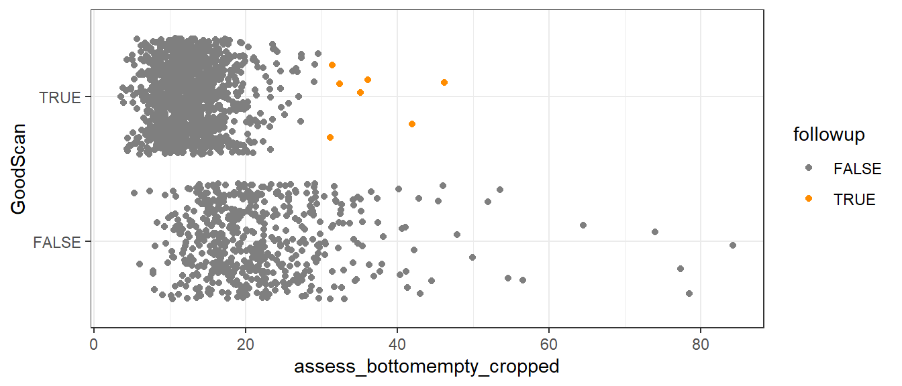
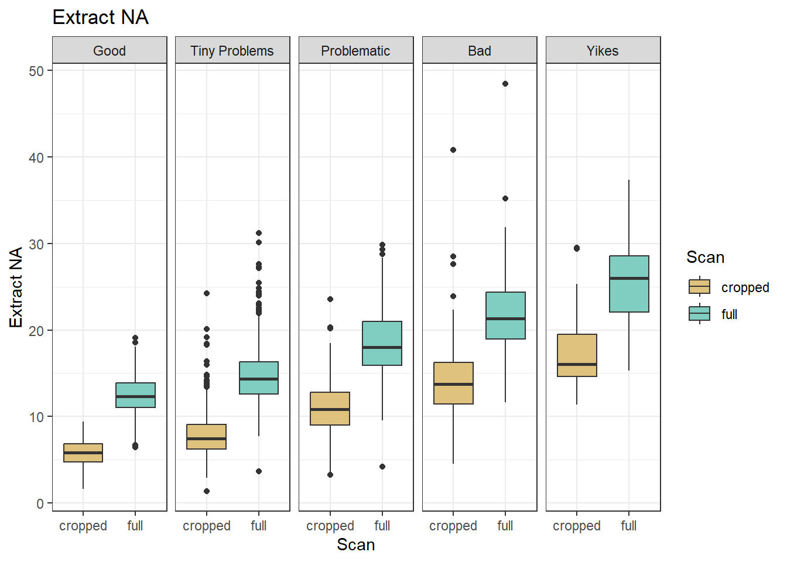

[1] "Extract NA. Correlation: 0.908 Full AUC: 0.871 Cropped AUC: 0.902"| min | firstQ | med | mean | thirdQ | max | |
|---|---|---|---|---|---|---|
| Standard | 3.666645 | 12.79727 | 15.082281 | 15.915471 | 18.30296 | 48.45372 |
| Cropped | 1.389464 | 6.38338 | 8.060005 | 8.916349 | 10.57698 | 40.80471 |
Should we use features from just one type of scan or both?
Call:
glm(formula = GoodScan ~ extract_na + extract_na_cropped, family = binomial(),
data = full.data)
Deviance Residuals:
Min 1Q Median 3Q Max
-3.1882 -0.2394 0.3044 0.5298 4.0795
Coefficients:
Estimate Std. Error z value Pr(>|z|)
(Intercept) 7.16247 0.37858 18.919 <2e-16 ***
extract_na -0.04349 0.03613 -1.204 0.229
extract_na_cropped -0.58303 0.05020 -11.615 <2e-16 ***
---
Signif. codes: 0 '***' 0.001 '**' 0.01 '*' 0.05 '.' 0.1 ' ' 1
(Dispersion parameter for binomial family taken to be 1)
Null deviance: 2230.6 on 1849 degrees of freedom
Residual deviance: 1299.2 on 1847 degrees of freedom
AIC: 1305.2
Number of Fisher Scoring iterations: 6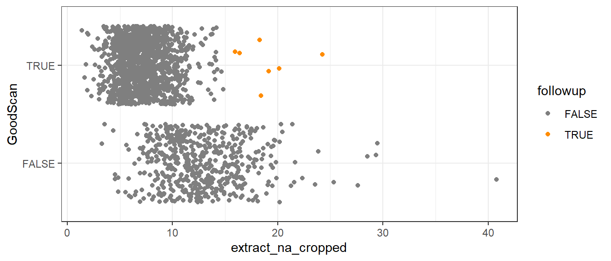
Conclusion for Extract NA
The values for feature extract_NA are highly correlated between the cropped and the full scan.
Using good and scans with only tiny problems as overall ‘good’ scans, the feature applied to cropped scans has an increased accuracy compared to the feature values from the full scan.
We might want to follow up on the orange colored scans:
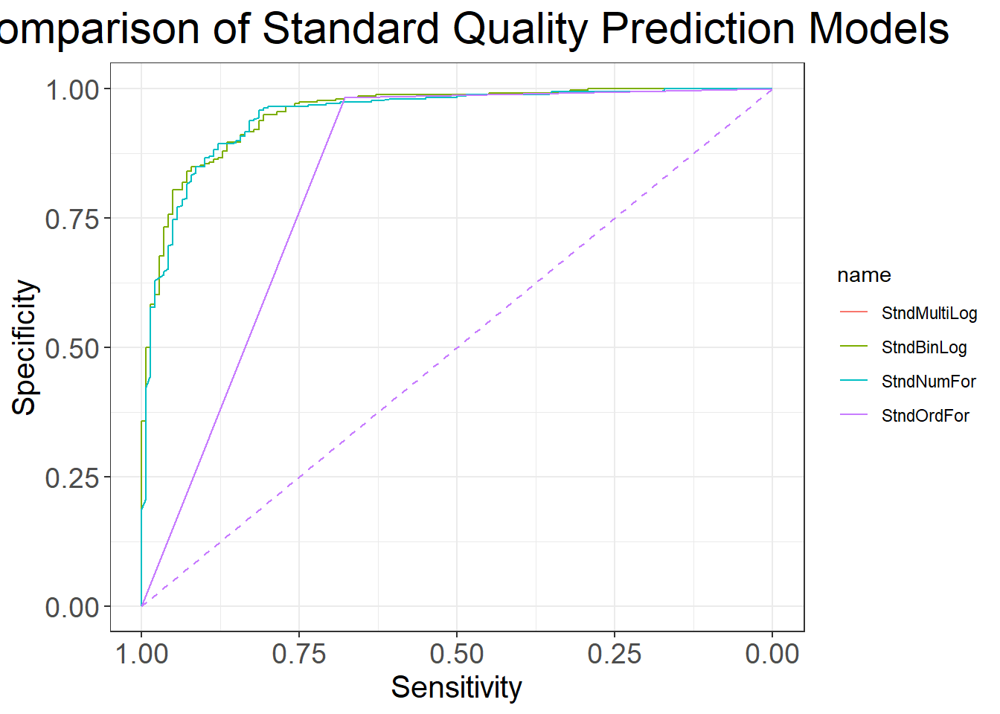
full.data$LAPD_id[full.data$followup][1] "FAU263-BA-L4" "FAU263-BC-L1" "FAU263-BC-L3" "FAU287-BC-L5" "FAU154-BD-L2"
[6] "FAU277-BA-L4" "FAU286-BA-L5"followupScans <- rbind(followupScans, full.data[full.data$followup == TRUE,])
# All followups for extract_na are mislabelled scans. They are all labelled as tiny problems but should be problematic or worse.Assess Bottomempty Cropped
Which of the features is better for discriminating between good and bad scans?
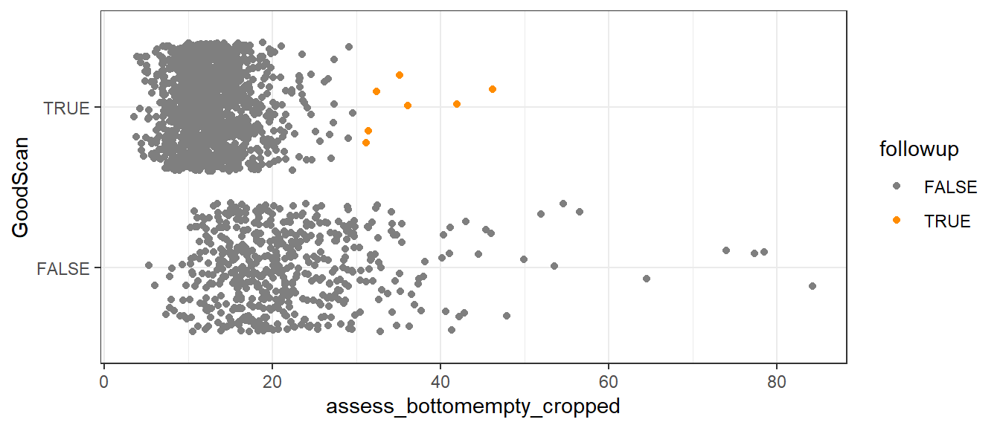
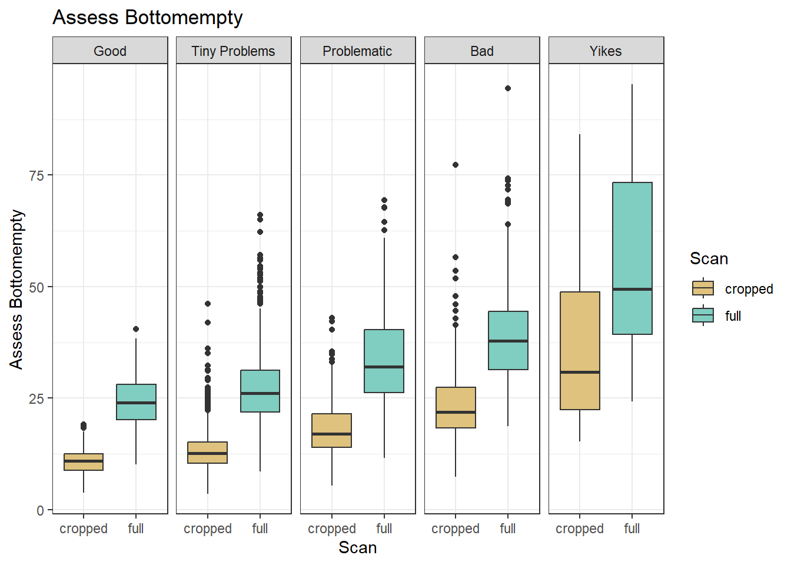
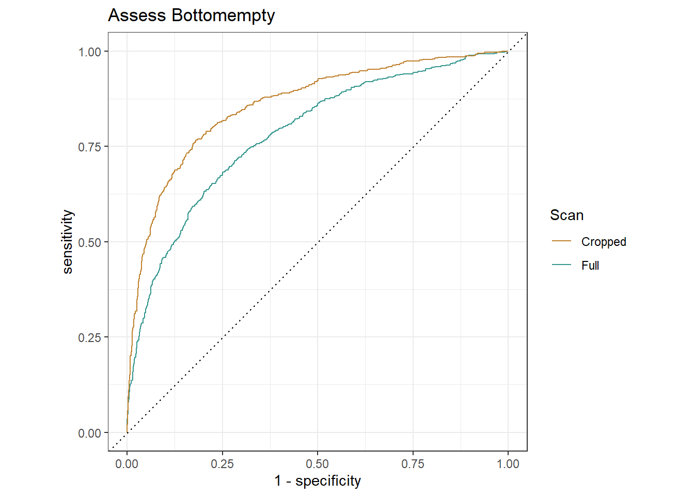
[1] "Assess Bottomempty. Correlation: 0.905 Full AUC: 0.783 Cropped AUC: 0.859"| min | firstQ | med | mean | thirdQ | max | |
|---|---|---|---|---|---|---|
| Standard | 8.516493 | 22.66947 | 27.54019 | 29.90259 | 34.63373 | 95.39375 |
| Cropped | 3.564558 | 10.78581 | 13.54205 | 15.28335 | 17.71191 | 84.22476 |
Should we use features from just one type of scan or both?
Call:
glm(formula = GoodScan ~ assess_bottomempty + assess_bottomempty_cropped,
family = binomial(), data = full.data)
Deviance Residuals:
Min 1Q Median 3Q Max
-2.6794 -0.2813 0.4084 0.6028 4.0680
Coefficients:
Estimate Std. Error z value Pr(>|z|)
(Intercept) 4.57647 0.25156 18.193 < 2e-16 ***
assess_bottomempty 0.09046 0.01460 6.194 5.86e-10 ***
assess_bottomempty_cropped -0.40779 0.02738 -14.895 < 2e-16 ***
---
Signif. codes: 0 '***' 0.001 '**' 0.01 '*' 0.05 '.' 0.1 ' ' 1
(Dispersion parameter for binomial family taken to be 1)
Null deviance: 2230.6 on 1849 degrees of freedom
Residual deviance: 1503.7 on 1847 degrees of freedom
AIC: 1509.7
Number of Fisher Scoring iterations: 5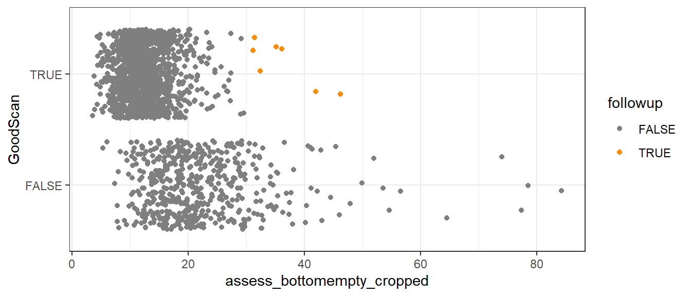
Conclusion for Assess Bottomempty
The values for feature assess_bottomempty are highly correlated between the cropped and the full scan.
Using good and scans with only tiny problems as overall ‘good’ scans, the feature applied to cropped scans has an increased accuracy compared to the feature values from the full scan.
We might want to follow up on the orange colored scans:
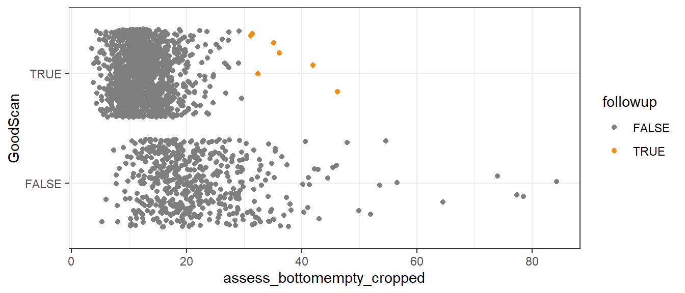
full.data$LAPD_id[full.data$followup][1] "FAU263-BA-L4" "FAU287-BC-L5" "FAU254-BD-L4" "FAU275-BC-L5" "FAU275-BD-L3"
[6] "FAU277-BA-L4" "FAU286-BA-L5"followupScans <- rbind(followupScans, full.data[full.data$followup == TRUE,])Assess Col NA Cropped
Which of the features is better for discriminating between good and bad scans?
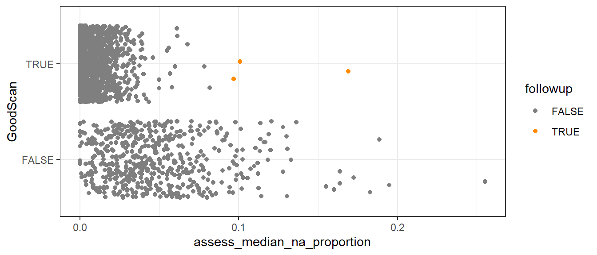
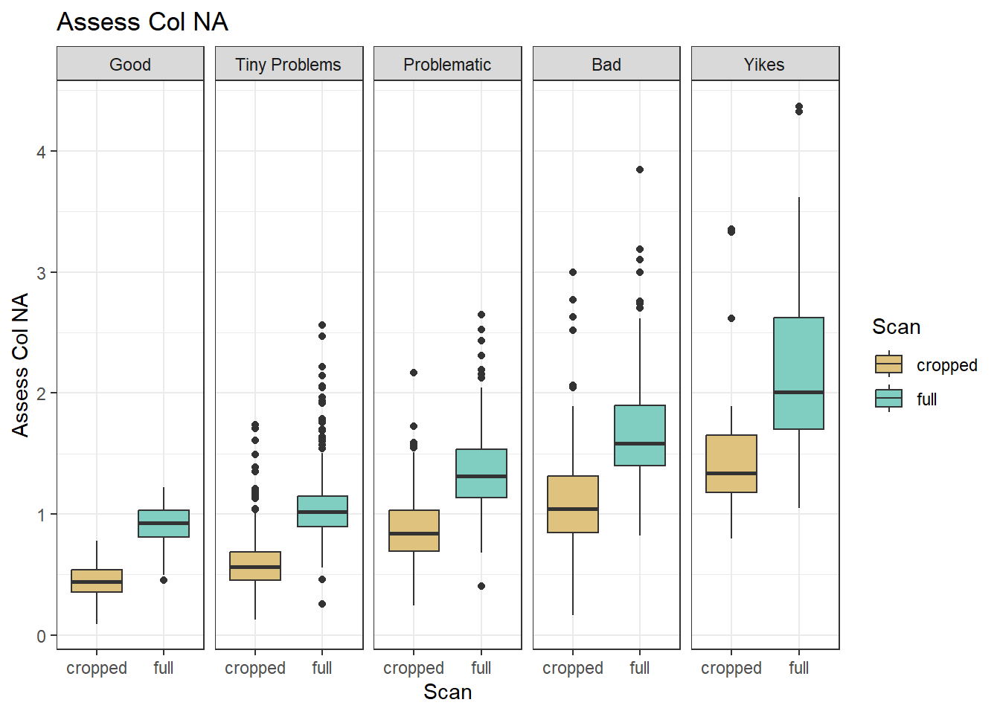
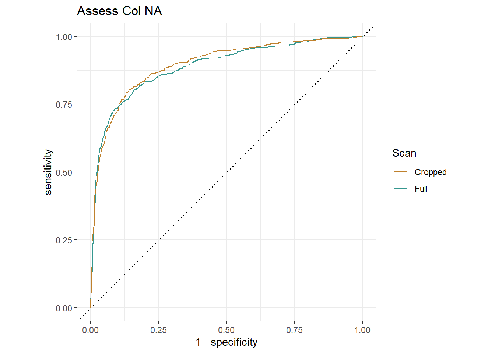
[1] "Assess Col NA Correlation: 0.919 Full AUC: 0.888 Cropped AUC: 0.896"| min | firstQ | med | mean | thirdQ | max | |
|---|---|---|---|---|---|---|
| Standard | 0.2573318 | 0.9244176 | 1.0755102 | 1.1654392 | 1.292844 | 4.368436 |
| Cropped | 0.0920783 | 0.4700281 | 0.6126759 | 0.6851693 | 0.807577 | 3.356120 |
Should we use features from just one type of scan or both?
Call:
glm(formula = GoodScan ~ assess_col_na + assess_col_na_cropped,
family = binomial(), data = full.data)
Deviance Residuals:
Min 1Q Median 3Q Max
-3.2254 -0.1897 0.3176 0.5365 3.6049
Coefficients:
Estimate Std. Error z value Pr(>|z|)
(Intercept) 7.3581 0.3785 19.440 < 2e-16 ***
assess_col_na -2.4724 0.5155 -4.796 1.62e-06 ***
assess_col_na_cropped -4.8233 0.6249 -7.719 1.17e-14 ***
---
Signif. codes: 0 '***' 0.001 '**' 0.01 '*' 0.05 '.' 0.1 ' ' 1
(Dispersion parameter for binomial family taken to be 1)
Null deviance: 2230.6 on 1849 degrees of freedom
Residual deviance: 1308.8 on 1847 degrees of freedom
AIC: 1314.8
Number of Fisher Scoring iterations: 6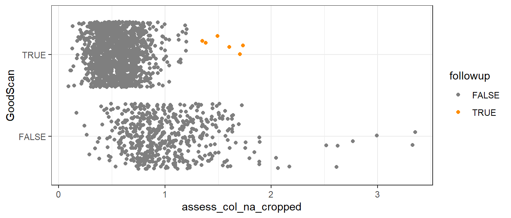
Conclusion for Assess Col NA
The values for feature assess_col_na are highly correlated between the cropped and the full scan.
Using good and scans with only tiny problems as overall ‘good’ scans, the feature applied to cropped scans has an increased accuracy compared to the feature values from the full scan.
We might want to follow up on the orange colored scans:

full.data$LAPD_id[full.data$followup][1] "FAU263-BA-L4" "FAU263-BB-L3" "FAU263-BC-L1" "FAU263-BC-L3" "FAU154-BD-L2"
[6] "FAU286-BA-L5"followupScans <- rbind(followupScans, full.data[full.data$followup == TRUE,])Assess Median NA Proportion Cropped
Which of the features is better for discriminating between good and bad scans?
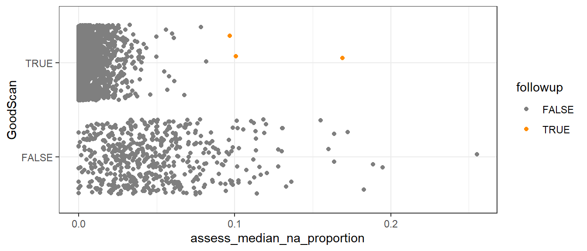


[1] "Assess Median NA Proportion. Correlation: 0.908 Full AUC: 0.907 Cropped AUC: 0.863"| min | firstQ | med | mean | thirdQ | max | |
|---|---|---|---|---|---|---|
| Standard | 0.0000000 | 0.0033099 | 0.0108771 | 0.0207348 | 0.0271577 | 0.2552491 |
| Cropped | 0.0011692 | 0.0518201 | 0.0686747 | 0.0751096 | 0.0918769 | 0.2994505 |
Should we use features from just one type of scan or both?
Call:
glm(formula = GoodScan ~ assess_median_na_proportion + assess_median_na_proportion_cropped,
family = binomial(), data = full.data)
Deviance Residuals:
Min 1Q Median 3Q Max
-2.8226 -0.1079 0.3143 0.4865 5.2612
Coefficients:
Estimate Std. Error z value Pr(>|z|)
(Intercept) 4.384 0.257 17.060 < 2e-16 ***
assess_median_na_proportion -83.035 5.925 -14.014 < 2e-16 ***
assess_median_na_proportion_cropped -21.546 3.491 -6.171 6.77e-10 ***
---
Signif. codes: 0 '***' 0.001 '**' 0.01 '*' 0.05 '.' 0.1 ' ' 1
(Dispersion parameter for binomial family taken to be 1)
Null deviance: 2230.6 on 1849 degrees of freedom
Residual deviance: 1219.0 on 1847 degrees of freedom
AIC: 1225
Number of Fisher Scoring iterations: 6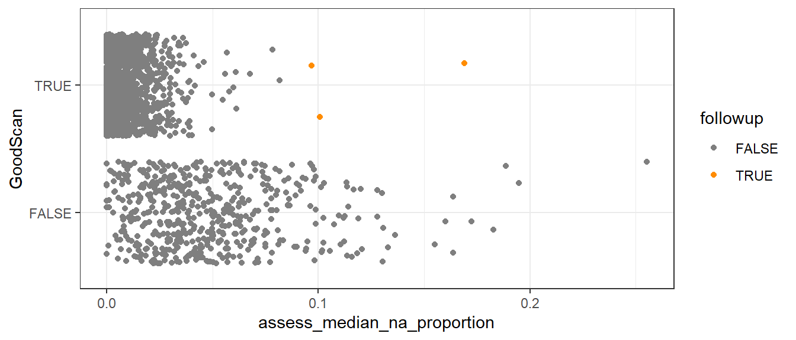
Conclusion for Assess Median NA Proportion
The values for feature extract_NA are highly correlated between the cropped and the full scan.
Using good and scans with only tiny problems as overall ‘good’ scans, the feature applied to full scans has an increased accuracy compared to the feature values from the cropped scan.
We might want to follow up on the orange colored scans:
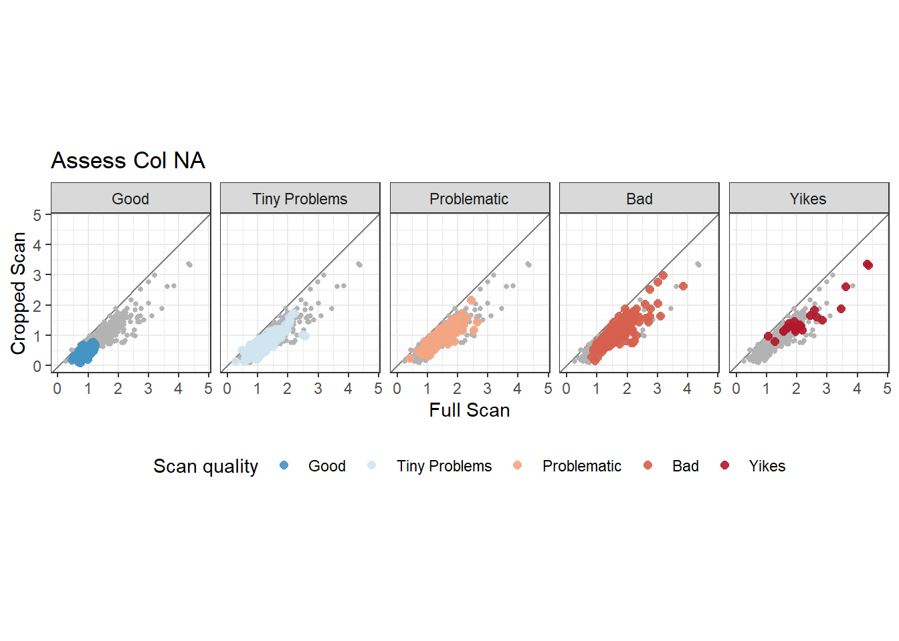
full.data$LAPD_id[full.data$followup][1] "FAU263-BC-L3" "FAU154-BD-L2" "FAU204-BC-L4"followupScans <- rbind(followupScans, full.data[full.data$followup == TRUE,])Cropped Model Analysis
| Model | TPR | TNR | F1 Score | Kappa |
|---|---|---|---|---|
| Crop Multinomial Logistic Regression | 0.9821 | 0.7 | 0.9322 | 0.7375 |
| Crop Binary Logistic Regression | 0.9554 | 0.7929 | 0.9359 | 0.7707 |
| Crop Ordinal Random Forest | 0.9554 | 0.8 | 0.9372 | 0.7764 |
| Crop Binary Random Forest | 0.9375 | 0.8286 | 0.9333 | 0.7709 |
Cropped Multi-Nomial Logistic Regression
train.mutli = train
train.mutli$Quality <- factor(train.mutli$Quality, levels=c("Good", "Tiny Problems", "Problematic", "Bad", "Yikes"), ordered = FALSE)
train.mutli$Quality <- relevel(train.mutli$Quality, ref = "Good")
crop.multi.model <- multinom(Quality ~ assess_percentile_na_proportion + assess_col_na_cropped +
extract_na_cropped + assess_middle_na_proportion + assess_bottomempty_cropped +
assess_median_na_proportion, data = train.mutli)# weights: 40 (28 variable)
initial value 2278.964084
iter 10 value 1514.996414
iter 20 value 1164.950515
iter 30 value 1097.826781
iter 40 value 1042.842997
iter 50 value 1027.678289
iter 60 value 1016.421115
iter 70 value 1012.592489
iter 80 value 1006.243573
iter 90 value 999.069566
iter 100 value 995.662593
final value 995.662593
stopped after 100 iterationssummary(crop.multi.model)Call:
multinom(formula = Quality ~ assess_percentile_na_proportion +
assess_col_na_cropped + extract_na_cropped + assess_middle_na_proportion +
assess_bottomempty_cropped + assess_median_na_proportion,
data = train.mutli)
Coefficients:
(Intercept) assess_percentile_na_proportion assess_col_na_cropped
Tiny Problems -0.8748816 150.5591 3.797753
Problematic -5.3629710 164.9373 6.489275
Bad -8.2376178 187.3876 4.993835
Yikes -12.1271079 186.3479 6.669425
extract_na_cropped assess_middle_na_proportion
Tiny Problems 0.05820161 23.98441
Problematic 0.11807948 50.88978
Bad 0.21449564 42.47232
Yikes -0.07907876 60.68594
assess_bottomempty_cropped assess_median_na_proportion
Tiny Problems -0.1697218 150.5591
Problematic -0.2535929 164.9373
Bad -0.1629795 187.3876
Yikes -0.1085262 186.3479
Std. Errors:
(Intercept) assess_percentile_na_proportion assess_col_na_cropped
Tiny Problems 0.4225495 3.301574 1.155191
Problematic 0.5727414 2.747071 1.371982
Bad 0.6781706 2.586306 1.462168
Yikes 1.1050427 4.882313 1.903764
extract_na_cropped assess_middle_na_proportion
Tiny Problems 0.0827786 8.554083
Problematic 0.1070690 9.791658
Bad 0.1207308 10.132553
Yikes 0.2018146 7.892080
assess_bottomempty_cropped assess_median_na_proportion
Tiny Problems 0.05580253 3.301574
Problematic 0.06268930 2.747071
Bad 0.06366597 2.586306
Yikes 0.06467393 4.882313
Residual Deviance: 1991.325
AIC: 2039.325 test$Predictions <- predict(crop.multi.model, test)test$num.predictions = 0
test$num.predictions[test$Predictions == "Good"] = 1
test$num.predictions[test$Predictions == "Tiny Problems"] = 1
model.metrics.all <- rbind(model.metrics.all, numerical.Metrics(test, "Crop Multi Logistic Reg"))Confusion Matrix and Statistics
Reference
Prediction 0 1
0 82 6
1 48 298
Accuracy : 0.8756
95% CI : (0.8408, 0.9051)
No Information Rate : 0.7005
P-Value [Acc > NIR] : < 2.2e-16
Kappa : 0.6733
Mcnemar's Test P-Value : 2.414e-08
Sensitivity : 0.9803
Specificity : 0.6308
Pos Pred Value : 0.8613
Neg Pred Value : 0.9318
Precision : 0.8613
Recall : 0.9803
F1 : 0.9169
Prevalence : 0.7005
Detection Rate : 0.6866
Detection Prevalence : 0.7972
Balanced Accuracy : 0.8055
'Positive' Class : 1
Cropped Numerical Logistic Regression
crop.num.logit.model <- glm(num.Quality ~ assess_percentile_na_proportion + assess_col_na_cropped +
extract_na_cropped + assess_middle_na_proportion + assess_bottomempty_cropped +
assess_median_na_proportion,
data=train, family="binomial")
summary(crop.num.logit.model)
Call:
glm(formula = num.Quality ~ assess_percentile_na_proportion +
assess_col_na_cropped + extract_na_cropped + assess_middle_na_proportion +
assess_bottomempty_cropped + assess_median_na_proportion,
family = "binomial", data = train)
Deviance Residuals:
Min 1Q Median 3Q Max
-2.8725 -0.0961 0.2832 0.4543 3.7463
Coefficients: (1 not defined because of singularities)
Estimate Std. Error z value Pr(>|z|)
(Intercept) 5.08453 0.40085 12.684 < 2e-16 ***
assess_percentile_na_proportion -60.33039 8.38255 -7.197 6.15e-13 ***
assess_col_na_cropped -2.15996 0.75895 -2.846 0.00443 **
extract_na_cropped -0.07350 0.06940 -1.059 0.28958
assess_middle_na_proportion -15.94732 7.76027 -2.055 0.03988 *
assess_bottomempty_cropped 0.01573 0.03805 0.413 0.67928
assess_median_na_proportion NA NA NA NA
---
Signif. codes: 0 '***' 0.001 '**' 0.01 '*' 0.05 '.' 0.1 ' ' 1
(Dispersion parameter for binomial family taken to be 1)
Null deviance: 1700.54 on 1415 degrees of freedom
Residual deviance: 867.54 on 1410 degrees of freedom
AIC: 879.54
Number of Fisher Scoring iterations: 6test$num.predictions <- predict(crop.num.logit.model, test, type="response")Warning in predict.lm(object, newdata, se.fit, scale = 1, type = if (type == :
prediction from a rank-deficient fit may be misleading# XXX Figure out followup scans
test[test$num.predictions < 0.5 & test$num.Quality == 1, ]$followup = TRUE
test[test$num.predictions > 0.75 & test$num.Quality == 0, ]$followup = TRUE
ggplot(test, aes(x=num.Quality, y=num.predictions)) +
geom_boxplot() +
xlab("True Quality") +
ylab("Probability of good scan") +
ggtitle("Cropped Numerical Logistic Prediction Test Data")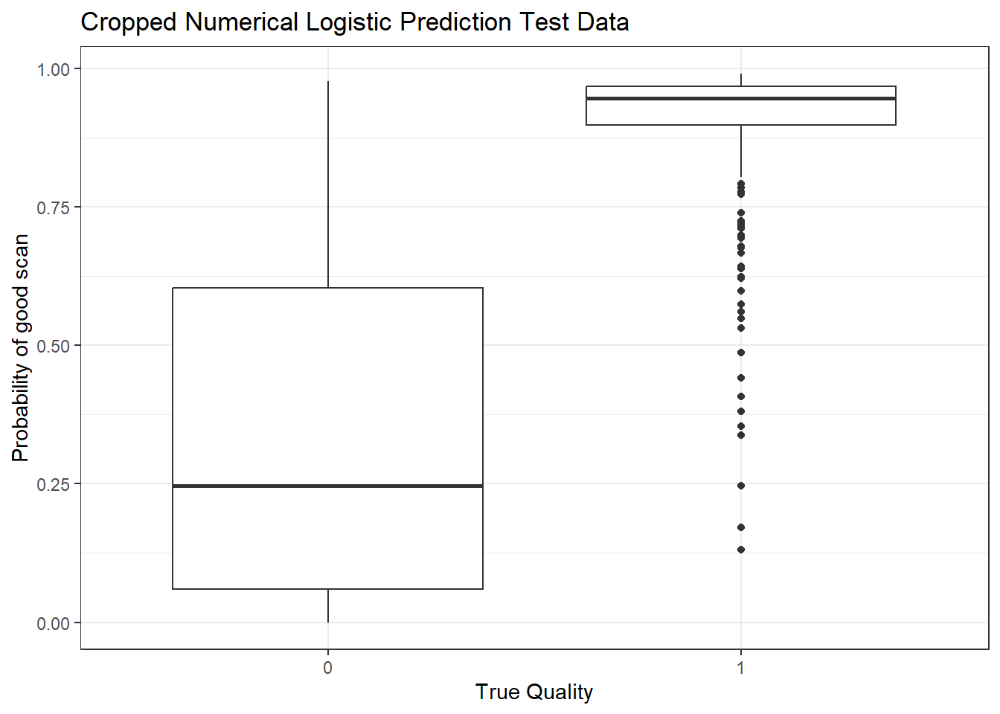
ggplot(test, aes(x=num.Quality, y=num.predictions, color=followup)) +
geom_jitter() +
scale_colour_manual(values=c("grey50", "darkorange"))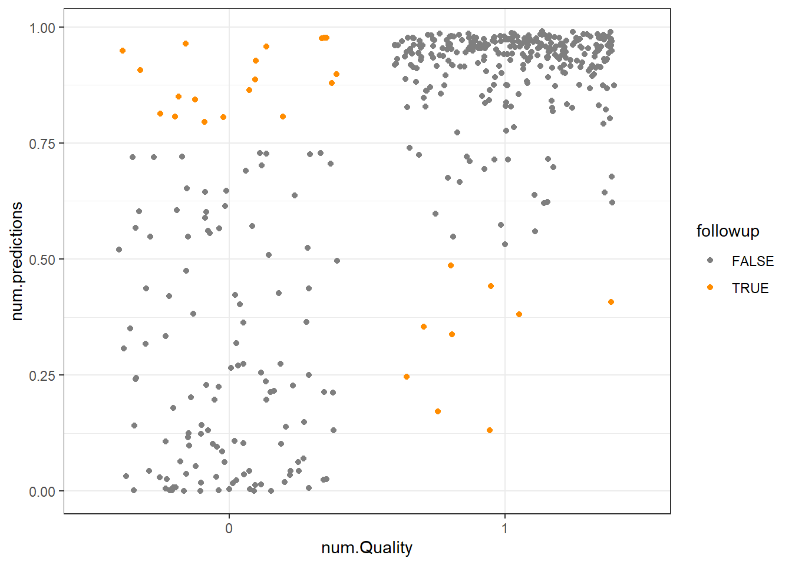
The boxplot shows a general picture of the results of the model. There is a significant number of misclassified scans. Using a typical 0.5 rounding we get the confusion matrix:
model.metrics.all <- rbind(model.metrics.all, numerical.Metrics(test, "Crop Binary Logistic Reg"))Confusion Matrix and Statistics
Reference
Prediction 0 1
0 95 11
1 35 293
Accuracy : 0.894
95% CI : (0.8612, 0.9214)
No Information Rate : 0.7005
P-Value [Acc > NIR] : < 2.2e-16
Kappa : 0.7333
Mcnemar's Test P-Value : 0.000696
Sensitivity : 0.9638
Specificity : 0.7308
Pos Pred Value : 0.8933
Neg Pred Value : 0.8962
Precision : 0.8933
Recall : 0.9638
F1 : 0.9272
Prevalence : 0.7005
Detection Rate : 0.6751
Detection Prevalence : 0.7558
Balanced Accuracy : 0.8473
'Positive' Class : 1
Cropped Ordinal Random Forest
crop.ord.forest.model <- randomForest(Quality ~ assess_percentile_na_proportion +
assess_col_na_cropped + extract_na_cropped +
assess_middle_na_proportion + assess_bottomempty_cropped +
assess_median_na_proportion, data = train,
importance = TRUE)
test$Predictions <- predict(crop.ord.forest.model, test)To help compare these models, we will introduce a compression concept. Just as before, all scans will be divided into Good, which includes Good and Tiny Problems. Bad will include all other categories.
test$num.predictions = 0
test$num.predictions[test$Predictions == "Good"] = 1
test$num.predictions[test$Predictions == "Tiny Problems"] = 1
model.metrics.all <- rbind(model.metrics.all, numerical.Metrics(test, "Crop Ord Rand For"))Confusion Matrix and Statistics
Reference
Prediction 0 1
0 97 14
1 33 290
Accuracy : 0.8917
95% CI : (0.8586, 0.9193)
No Information Rate : 0.7005
P-Value [Acc > NIR] : < 2e-16
Kappa : 0.7307
Mcnemar's Test P-Value : 0.00865
Sensitivity : 0.9539
Specificity : 0.7462
Pos Pred Value : 0.8978
Neg Pred Value : 0.8739
Precision : 0.8978
Recall : 0.9539
F1 : 0.9250
Prevalence : 0.7005
Detection Rate : 0.6682
Detection Prevalence : 0.7442
Balanced Accuracy : 0.8501
'Positive' Class : 1
Cropped Numerical Random Forest
crop.num.RF.model <- randomForest(num.Quality ~ assess_percentile_na_proportion + assess_col_na_cropped +
extract_na_cropped + assess_middle_na_proportion + assess_bottomempty_cropped +
assess_median_na_proportion, data = train,
importance = TRUE)
test$num.predictions <- predict(crop.num.RF.model, test, type="prob")[,2]
test[test$num.predictions < 0.5 & test$num.Quality == 1, ]$followup = TRUE
test[test$num.predictions > 0.75 & test$num.Quality == 0, ]$followup = TRUE
ggplot(test, aes(x=num.Quality, y=num.predictions)) +
geom_boxplot() +
xlab("True Quality") +
ylab("Probability of good scan") +
ggtitle("Numerical Logistic Prediction Test Data")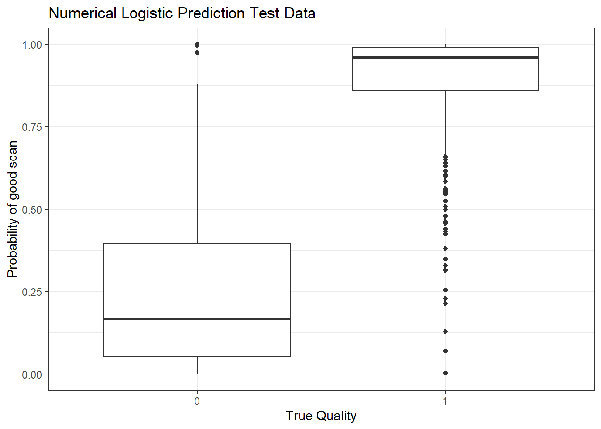
ggplot(test, aes(x=num.Quality, y=num.predictions, color=followup)) +
geom_jitter() +
scale_colour_manual(values=c("grey50", "darkorange"))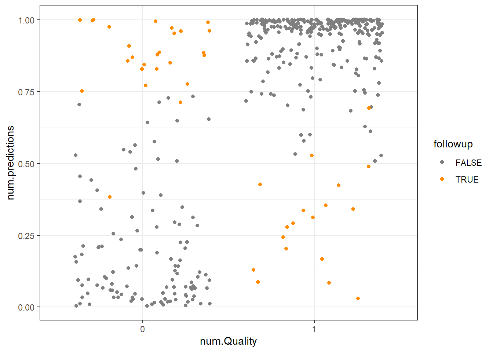
The boxplot shows a general picture of the results of the model. There is a significant number of misclassified scans. Using a typical 0.5 rounding we get the confusion matrix:
model.metrics.all <- rbind(model.metrics.all, numerical.Metrics(test, "Crop Binary Rand For"))Confusion Matrix and Statistics
Reference
Prediction 0 1
0 102 20
1 28 284
Accuracy : 0.8894
95% CI : (0.856, 0.9173)
No Information Rate : 0.7005
P-Value [Acc > NIR] : <2e-16
Kappa : 0.7317
Mcnemar's Test P-Value : 0.3123
Sensitivity : 0.9342
Specificity : 0.7846
Pos Pred Value : 0.9103
Neg Pred Value : 0.8361
Precision : 0.9103
Recall : 0.9342
F1 : 0.9221
Prevalence : 0.7005
Detection Rate : 0.6544
Detection Prevalence : 0.7189
Balanced Accuracy : 0.8594
'Positive' Class : 1
Cropped Model Results
Followup Scans
- XXX Probably need to do something here.